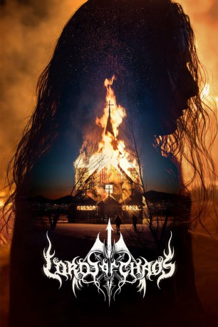
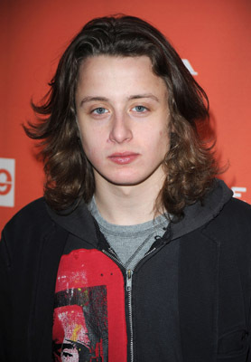

#10890 Lords of Chaos
 
 IMDB-Wertung: 6.5 / 10
IMDB-Wertung: 6.5 / 10  Metascore: 48
Metascore: 48 
Gewalt, Mord und brennende Kirchen kennzeichnen die norwegische Black-Metal-Szene der 1990er-Jahre. Im Mittelpunkt des "Chaos" stehen Øystein "Euronymus" Aarseth (Rory Culkin), Mitgründer der legendären Band Mayhem und selbst ernannter Erfinder des "wahren norwegischen Black Metals" sowie Varg "Greven" Vikernes (Emory Cohen), ein Bekannter und Bandkollege auf der Suche nach Anerkennung in den Black-Metal-Kreisen. Was als Freundschaft zwischen den beiden jungen Musikern beginnt, endet mit einem blutigen Mord und prägt die Metal-Szene bis heute...
Jahr: 2018
Dauer: 118 Minuten
FSK: 18
Land: England Studio: Arrow FilmsTonspuren: DD5.1 - ,
Untertitel: Deutsch,
Auflösung: 1080p (1916x1038) Größe: 5058 MB
Genre: Thriller, Horror, Drama, Musik, Biographie
Regisseur: Jonas Åkerlund
Drehbuch: Dennis Magnusson, Jonas Åkerlund, Michael Moynihan, Didrik Søderlind
Soundtrack: Sigur Rós
Darsteller:
-  Rory Culkin als Euronymous
 Emory Cohen als Kristian 'Varg' Vikernes
Emory Cohen als Kristian 'Varg' Vikernes Jack Kilmer als Pelle 'Dead' Ohlin
Jack Kilmer als Pelle 'Dead' Ohlin Sky Ferreira als Ann-Marit
Sky Ferreira als Ann-Marit- Valter Skarsgård als Bård Guldvik 'Faust' Eithun
- Anthony De La Torre als Jan Axel 'Hellhammer' Blomberg
- Jonathan Barnwell als Jørn 'Necrobutcher' Stubberud
- Sam Coleman als Jon 'Metalion' Kristiansen
 Wilson Gonzalez als Varg's Driver
Wilson Gonzalez als Varg's Driver- Lucian Charles Collier als Stian 'Occultus' Johannsen
 Gustaf Hammarsten als Finn Tender
Gustaf Hammarsten als Finn Tender Jon Øigarden als Magne Andreassen
Jon Øigarden als Magne Andreassen Matt Devere als Police Officer Interrogator 1
Matt Devere als Police Officer Interrogator 1- Anette Martinsen als Norwegian Female Newscaster
- Klemens Koehring als German Newscaster
- Antonio Mancino als Italian Radio
- Andrew Lavelle als Gylve 'Fenriz' Nagell
- James Edwyn als Kjetil 'Manheim'
- Arion Csihar als Attila Csihar
- Jason Arnopp als Jason Arnopp
- Levente Törköly als Hammed
- Patrick Mullowney als Photographer
- Tom van Heesch als Pytten
- Eric Casey Lamme als Euronymous Father
- Petra Anita Mark als Euronymous Mother
- Jeana Sullivan als Euronymous' Mother
- Flóra Zsoldos als Euronymous Sister (8)
- Anna Zsoldos als Euronymous Sister (13)
- Rickard Krantz als Dead's Father
- Dzsenifer Bagi als Teenage Girl 1
- Ivett Leszkovszki als Teenage Girl 2
- Anna Fésus als Psycho Girl
- Zsuzsanna Biro als Black Metal Girl Hunting Varg 1
- Melinda Mária Mátay als Salvation Army Woman
- Patrick McMenamin als Mailman
- LaJosné Gyongyi Gyurkovszki als Old Lady Neighbour
- Gábor Meszlényi als Metal Boy 1
- Álmos Kovács als Metal Boy 2
- Dorina Fülop als Hellhammer's Girl
- Jørn Madislien als Norwegian Male Newscaster 1
- Espen Aas als Norwegian Male Newscaster 2
- Adrian Mills als English Male Newscaster
- Charlotte Morgan als English Female Newscaster
- Jeffrey Koffman als North American Newscaster
- Johanna Patricia als South American Newscaster
- Yukari Snapes als Japanese Newscaster
- Marina Miraglia als Faust's Mother
- Viktor Filep als Fire Breather
Datei: X:\FSK18-2018\Lords of Chaos (2018, FSK18, 1916x1038).mkv seit 03.04.2019
Festplatte: FSK18
 Es gibt insgesamt 23 Filme in der Gruppe 'FSK18-2018'
Es gibt insgesamt 23 Filme in der Gruppe 'FSK18-2018'